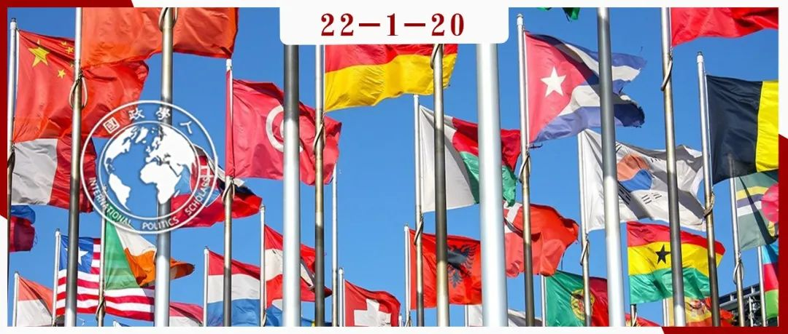

收录于合集 #《国际关系前沿》2022年第1期 23个

作品简介
作者： Kenneth W. Abbott，亚利桑那州立大学政治与全球研究名誉教授；Benjamin Faude，伦敦政治经济学院全球政治研究员。
编译： 林怡娉（国政学人编译员，外交学院国际关系研究所硕士生）
来源： Abbott, K.W., Faude, B. Hybrid institutional complexes in global governance. The Review of International Organizations (2021). https://doi.org/10.1007/s11558-021-09431-3
归档： 《国际关系前沿》2022年第1期，总第40期。

导 读
本文是一篇关注全球治理中不同制度之间关系的文章。本文基于机制复合体理论的既有成果，为探究全球治理中同一治理议题领域内多种制度的互动关系和治理影响而提出了“混合制度复合体”，认为“制度更具多样性（尤其是包含更多非正式制度）”是其区别于机制复合体的结构特征。尽管仍然存在制度重叠、冲突的风险，混合制度复合体内成分制度之间的功能分化和非正式等级能够使之发挥不同于机制复合体的治理优势。
本文的贡献在于从理论层面关注到全球治理中由正式制度、非正式制度及两者的互动共同构成的制度治理体系；正式制度和非正式制度之间可能的合作与冲突及其对全球治理的影响，并试图为其构建新的分析视角。对此，“混合制度复合体”可为未来关注制度间关系及其治理影响的研究提供思路参考。然而，全球治理不同议题领域内制度多样性的程度并非一致，不同制度间的互动也是动态发展的过程。“混合制度复合体”能否有效地解释全球治理制度发展的实际状况，需要引入更加丰富的实证案例来检验。
摘 要
当今占据世界政治中大部分议题领域的并非个体制度或由正式的国家间制度构成的机制复合体（regime complexes），而是“混合制度复合体”（hybrid institutional complexes, HIC）。 HIC由多样的国家间、国家内、公私混合、私人的正式和非正式的跨国制度所构成。本文拓展了HIC这一概念并将其作为描述和分析当代全球治理的创新视角。HIC和机制复合体的核心结构性区别在于，HIC内部的制度形式更具多样性。据此，与机制复合体相比，HIC的运作方式有两个显著的不同： 一、HIC的成分制度（component institution）之间的功能分化相对更强，所以其内部权威主张重叠的情况较少；二、HIC的成分制度之间具有更强的非正式等级，所以受益于更强的权威排序。 HIC既有独特的治理优势，也带来了特殊的治理风险。
编 译
01
介绍混合制度复合体（HIC）
1.1 HIC的兴起
当今，混合制度复合体（HIC）广泛见诸于气候变化、全球卫生、金融监管、网络空间、核安全等全球治理领域。 它不仅包括多边条约和正式的政府间组织（FIGOs），还包括多种组合的其他制度形式：非正式政府间组织（IIGOs）、跨政府网络（TGNs）、跨国公私伙伴关系（TPPPs）、地方政府的跨国协会、私人的跨国监管组织（PTROs）等等。在过去的30年间，HIC随着IIGO等替代性制度形式的激增而出现，这在已经被机制复合体占据的领域最为常见。这一过程有效地将机制复合体转化成混合制度复合体，改变了国际治理的架构。 在国际机制复合体盛行的议题领域，制度多样性的爆炸式增长，使得HIC成为最常见的全球治理复合体类型。
**
**
对此，国际关系学界日益关注到制度的密度（density），从针对单一制度的研究转向对制度互动、机制复合体以及跨制度策略选择的研究，但相关研究却落后于制度多样性的发展，并且持续侧重于正式的、合法的国家间制度。同时，关于跨国和非正式制度的研究也发展起来，多强调私人、次国家行为体和制度的治理作用及其与国家间制度的互动。然而，国际关系学界尚未发展出一个包含所有制度形式的分析视角，尚未系统地分析由不同制度形式构成的治理复合体的独特结构、运作方式、治理优势及其风险。本文引入了HIC的概念，将其作为一种描述和分析全球治理制度发展现状的创新视角，以此发起一项更加全面地探索HIC的结构、运作方式和治理影响的研究议程。
1.2 作为分析视角的HIC概念
本文提出界定HIC的四个特征。
一、HIC的制度多样性程度相对较高。HIC包括广泛的国家间、国家内、公私混合和私人的制度形式，显著影响其成员资格、法律和政治权威、运作方式和其他重要方面。相较之下，机制复合体则是由相对同质的制度构成的。
二、HIC的成分制度是全球治理制度，具备一个或多个治理功能，例如设置标准、监督、执行、为执行活动融资、生产和传播信息。
三、HIC的成分制度应对着一系列共同的治理问题，例如气候变化、核安全或对金融机构的审慎监管。此外，HIC可以解决比已经认定的议题领域更窄或更宽的问题，或交叉于多个议题领域的问题。
四、HIC是一个“复合体”，而非仅仅是多个制度的集合。HIC的成分制度在持续处理一系列共同的问题；所有制度都有治理该议题的适当权力和能力。因此，这些制度持续相互作用：它们考虑彼此的行动，影响彼此的规范发展和治理效力，并产生其他的互动性影响。这些互动和影响是HIC的体系特征，因此，只有在此类互动中的制度才是复合体的一部分。
HIC的许多独特特征、优势和弱点都反映出其成分制度之间互动的结果。例如，基于功能分化的互动可以产生劳动分工，继而通过比较优势和相互强化增加治理体系的效力。基于非正式等级的互动可以促使体系更加有序和一致。此外，制度互动也可能削弱现有制度、降低制度效率，或放大竞争和冲突、破坏一致性。因此，HIC并非一系列简单的“平行”或“碎片化”制度，而是一个治理体系。
1.3 HIC的结构特征
制度多样化的HIC在 重叠 和 等级 方面不同于机制复合体。 HIC的成分制度表现出相对较强的功能分化，因此重叠较少；尽管HIC通常缺乏正式的等级，却也具有更强的非正式等级。
功能分化
HIC的成分制度 在其成员和权威方面更具差异 。成员和权威是制度“重叠”的两个决定性因素。例如，只有FIGO、条约机构和IIGO才具备国家成员，能够采用针对国家问题的权威性标准，并且只有条约机构和少数FIGO可以采用具有法律约束力的规则。除了极少数特例之外，跨政府网络的标准只涉及参与的政府机构，而跨国公私伙伴关系和私人标准只涉及私人参与方，并且都不具有法律约束力。替代性制度也在治理功能和技术方面不同于国家间制度。由于这种分化，相较于机制复合体，HIC面临相对较少的针对权威主张的冲突和制度重叠带来的挑战性问题。
非正式等级
HIC内多样的成分制度之间表现出更强的非正式等级。 泰勒·普拉特（Tyler Pratt）提出的两种解释机制可以用来分析制度间的遵从。第一，“功能效率”（functional efficiency）会导致制度遵从其他拥有更多专业知识、更有效地决策、对解决当下问题更具权威性或者具有其他互补性优势的制度。这减少了制度间“低效的重叠和不一致性”。第二，“成员国权力”问题导致某一制度遵从那些具有相对更强的成员国的制度，因而制度间产生了“基于权力的等级制”。这两种解释机制在HIC中都更为突出，以下将从功能效率和权力两个方面来分析HIC内部的制度遵从。
功能效率
正式的国家间制度是高度制度化的，这促成了合作行为的集中化和制度的独立性。 HIC内部的非正式制度、国家内制度、公私混合制度和私人制度倾向于遵从正式国家间制度所采用的法律规则、规范和其他承诺。 相比之下，非正式跨国制度的制度化程度较低，无法采用具有法律约束力的规则，因此无法执行正式制度的治理功能。但它们却有独特的优势，能够有效发挥诸如采取协商标准、传递信息、建立互信等作用，并且其形成和运作的成本相对较低，因此更具可塑性和灵活性。据此， 当非正式跨国制度能够以更低的成本有效解决合作问题、完成治理任务时，正式的国家间制度也会倾向于遵从它们。 气候变化领域的HIC体现了这两种形式的制度遵从。
权力
由权力较大的成员国或机构组成的制度或由国家授予广泛权威的制度，比相对较弱的制度更具等级特性。例如，二十国集团具有足够的国家权威和权力来协调金融领域的HIC内部的跨政府网络。而世界卫生组织拥有普遍的成员国，反而稀释了国家的权力，只有有限的国家授权和资源。其他相关制度遵从世卫组织的专业知识和正当性，但却几乎不关注其权力。据此， 国家内部和非国家制度将倾向于遵从国家间制度的规则，尤其是遵从具有强大国家成员的制度；次国家和非国家制度将倾向于遵守跨政府网络的规则，尤其是遵从来自强大国家的机构成员的制度。 实际的遵从程度取决于相关制度的相对权威和权力。
02
HIC内部的冲突
HIC也可能会面临制度间的意见分歧和冲突，从而降低治理效力。 第一，权威主张和成员身份的重叠在相同或类型相近的制度（例如条约和FIGO）之间仍然可能存在。第二，强国或其他强大的行为体可能采取跨制度的策略来规避（bypassing）现有制度中的竞争对手、否决其他成员或绕过繁琐程序，以寻求负担较轻的合作形式或追求其他的个体目标。第三，强国和强行为体可能创建新的制度来直接与现有制度进行“规则、实践或使命”方面的竞争，这一过程被视为“竞争性多边主义”。非国家行为体也可能追求规避和竞争的策略。相较于竞争策略，规避策略更加温和，可能会强化认知或规范的分歧，但不会导致彻底的矛盾；而竞争策略主要发生在国家对现有制度的监管规则不满并寻求改变这些规则的时候。
尽管规避和竞争仍然可能发生，但HIC的结构特征却限制了行为体追求这些策略的动机和能力。 首先，HIC的制度多样性使之通过选择法庭（forum- shopping）和制度创建的方式限制了制度形式的选择。并非所有制度形式都适用于寻求规避或竞争的行为体，而选择这些策略也可能无法提供行为体所寻求的权力或能力。其次，非正式等级也意味着大多替代的制度形式可能遵从现有的以条约为基础的制度、调整其规范和活动，以受益于后者的权威与正当性。最后，制度多样性可以抑制一些规避和竞争策略带来的负面影响。即使国家或其他行为体将问题转移到不同的制度或创建新的制度，也不会削弱整个治理体系，因为不同行为体创建和管理的其他制度可以在一定程度上填补空缺。
03
HIC及其治理结果
3.1 治理优势
实质契合（substantive fit）
**
**
“契合”（fit）是指治理体系与其寻求解决的问题之间的一致性或兼容性。HIC的制度多样性使之能够更优越地“实质契合”许多当代治理问题。当代全球问题的多样性需要多样的制度回应。 由于其制度更具多样性，HIC能比机制复合体提供更多样的治理回应：HIC的成分制度可以解决它们最擅长解决的合作问题，可以通过比较优势和相互强化来增强治理体系的效力。
权威的国际制度最适合解决共同利益的困境，而替代性制度则能以更低的成本为其他合作问题提供更多合适、乃至更优的解决方法。此外，许多治理问题也源于国家、次国家行为体和私人行为体的行为，需要它们作出回应。如果治理问题是由不同的行动体造成的，并且行为体是有效应对的必要条件，那么制度的复杂性必须与行为体的复杂性相匹配。HIC内部的不同行为体构成了替代性制度；替代性制度则将这些行为体作为治理目标；采用适合这些目标的治理技术；提供各种形式的专业知识和发挥其他治理能力。
不同制度也通过相互强化增加了体系的有效性。非正式制度弥合了治理差距，将正式制度的规则扩散到其他的治理目标群体。灵活、低成本的制度可以试验潜在的治理方案，为之后的行动提供借鉴。不同制度也同时以多种方式来解决治理问题。
政治契合（political fit）
“政治契合”涉及到合作安排的“激励-相容性”（incentive-compatibility）： 政治契合的程度越高，合作安排越能符合成员和利益相关方的偏好和需求，使治理更加有效。 HIC的制度多样性使之能够（尤其是在成员和利益相关方多样化的情况下）在政治上契合许多当代治理问题。
每个成分制度都有与其成员、利益相关方和治理目标相关的治理利益、局限、成本和风险。这些要素反映出制度独特的权威、成员身份、实质性重点、运作模式和专业知识。 HIC为不同的行为体提供选择治理优势、缺点、成本和风险都最符合行为体自身的特点和偏好的制度来参与治理的机会。 此外， 每一种制度形式都赋予特定的行为体权力，为它们提供参与治理的角色。
协调和一致性
有效的协调（coordination）能够增强HIC的治理效力。 协调包括：1、互补性的制度设计和路径依赖；2、多中心治理理论的主要机制：分散适应（decentralized adaptation），即制度管理者随着时间的推移调整自己的治理活动来适应其他制度的治理活动；3、策略排序（strategic ordering），即行为体或制度有意影响其他制度的产生、设计或行为。
HIC的特征有利于有效采用这三种协调机制。首先，功能分化和非正式等级促进制度的“情境设计”（contextual design）。与功能分化一致，创建者在制度设计时避免与现有制度重叠。创建者也经常设计和授权制度来补充其他形式的制度，创建制度来弥补其他形式制度留下的治理空缺。其次，出于同样的原因，功能分化和非正式等级鼓励分散适应。制度管理者有强烈动机来调整制度设计、规范和活动，以避免代价高昂的重叠。最后，非正式等级尤其利于策略排序。策略排序的方式包括元治理、“编排”（orchestration）和互动管理。例如在编排中，一个“编排者”（主导的行为体或制度）让其他制度作为中介参与治理，诱导它们以实现“编排者”的治理目标的方式追求它们各自的治理目标，诱导方式包括说服、物质援助和思想支持、召集潜在的创建者、通过信息和规范来制定制度议程、认可符合其标准的制度。等级相对较高的制度最适合利用这些方法。
3.2 治理风险
当国家内制度、公私混合制度和私人制度将其规范和程序调整为与特定的条约或FIGO相一致，或由FIGO与强大的成员国来主导或管理这些制度时，HIC就可能加剧制度重叠和冲突的问题。 例如，如果一个FIGO将其权力扩展到由现有的FIGO管理的议题领域，就可能产生制度重叠和冲突，增加了成员国的成本。如果其他制度形式追随这一FIGO，相应地扩展其权威，也将与现有制度的相互重叠，加剧HIC体系中的冲突，阻碍协调并使其他行为体承担额外的成本。
在制度功能分化的背景下， 如果协调不足，个体制度可能会承担不适合自身解决的问题，减少其与治理问题之间的实质契合。 这种错位可能源于简单的判断失误、制度创建者和管理者的过度野心或者制度之间的资源竞争。制度多样性也可能因规则重叠而产生不一致，或导致多个制度嵌入仅仅只需要一个制度来治理的议题领域。
HIC为行为体提供了加入或创建义务相对较弱的制度的余地。 此外，尽管非正式制度很少与基于条约的制度直接竞争，但却为国家和其他要求参与治理的行为体提供了替代方案。同样，即便更具治理优势，在IIGO等“软”制度形式（soft institutional forms）解决问题时，条约机构和FIGO可能更难形成对这些问题采取“硬”行动的政治意愿。
04
结论
本文介绍和发展了HIC这一概念，并分析了HIC对全球治理效力的影响作用。HIC的视角在解释由不同制度形式占据的领域、涉及不同制度之间互动的研究问题以及在HIC占据的议题领域就治理提出一般性主张方面富有成效。本文提出未来可以推进的研究方向：一、追踪不同议题领域内HIC的形成、结构和运作；二、记录HIC受制度多样性影响的变化，探究其产生的原因及其对治理效力的影响；三、分析跨制度的个体收益策略、现有制度中的规避和否决策略以及直接竞争策略如何在HIC内部运作；四、探索行为体如何在HIC中运用协调机制及协调机制的生效条件；五、将本文的推测操作化为可证实的命题，用于特定的研究问题和议题领域。
词汇整理
混合制度复合体 Hybrid institutional complex, HIC
私人跨国监管组织 Private transnational regulatory organizations, PTROs
跨政府网络 Trans-governmental networks , TGNs
跨国公私伙伴关系 Transnational public-private partnerships, TPPPs
制度多样性 Institutional diversity
选择法庭 Forum-shopping
审校 | 曾庆鸣 陈想
排版 | 云琪布日 邱意雯
文章观点不代表本平台观点，本平台评译分享的文章均出于专业学习之用, 不以任何盈利为目的，内容主要呈现对原文的介绍，原文内容请通过各高校购买的数据库自行下载。